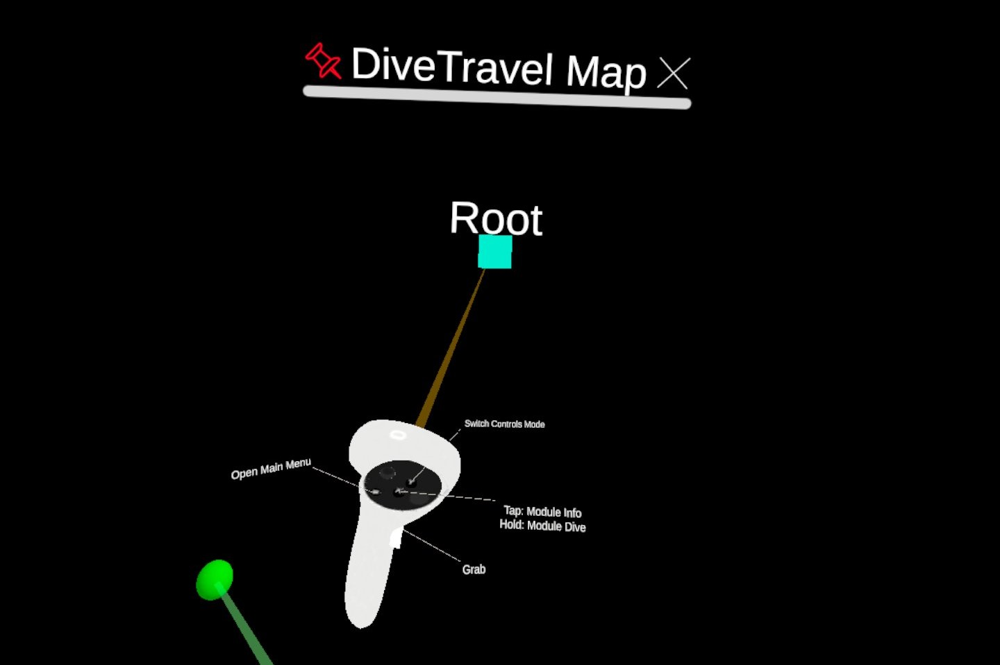
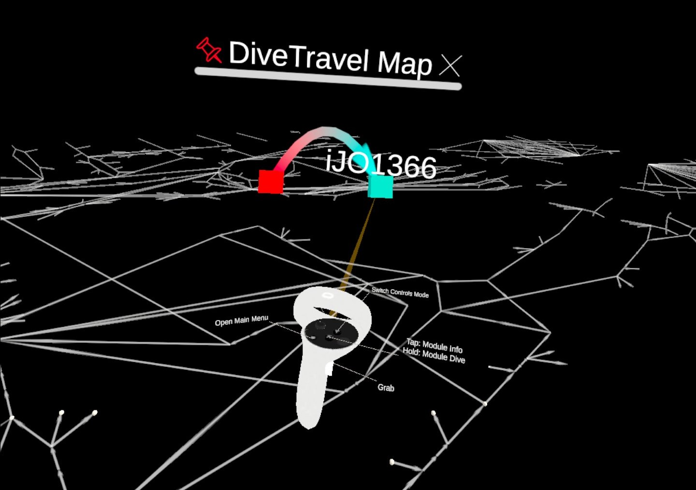

Dive Map
This module is a graph representing how a diver navigated in the dive scenes. The cubic nodes are representation of the dive scenes and the arrows indicate in which order the diver moved from one dive scene to another. Dive scenes are named after the model file they are encapsulating. The purpose of this map is to help divers build a mental model of how they explore the data.
Here is the dive map when the user has not moved from the root dive scene:
Here is the dive map when the user has dived in the scene displaying the model iJO1366:
Note
This map currently does not allow much interactions. For example, the nodes are fixed and the gradient of color for the nodes and the edges are always following the HUE. We plan to extend the functionalities of this map in future updates.